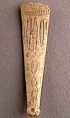
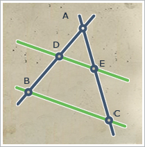
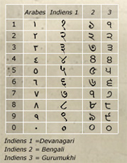

Evolution Chronologique
Antiquité
Vers 18 000 avant J.-C. : Apparition des premières formes de mathématiques.
Les systèmes sont très rudimentaires et ne font que prouver que les hommes utilisent des aides à la numération. Ces premiers marqueurs démontrent le besoin d’une abstraction progressive qui va conduire à la naissance de la discipline.
1640 avant J.-C. : Le scribe égyptien Ahmes recopie le Papyrus Rhind.
C’est le plus ancien document de mathématiques connu. Il se compose de problèmes résolus dans deux différentes branches de la discipline : l’arithmétique et la géométrie. Nous y trouvons la première approche de la constante π = 3,160.

Pendeloque gravée de figures géométriques
Vers 590 avant J.-C. : Thalès fonde la discipline « géométrie ».
De geo et metron, qui signifie la mesure de la Terre. Il décrit les principales caractéristiques du triangle, notamment que tout angle inscrit dans un demi-cercle est toujours un angle droit.

Le théorème de Thalès
Vers 540 avant J.-C. : Pythagore et les Pythagoriciens.
Les mathématiques sont alors considérées comme l’expression d’un idéal de pensée. Des travaux mettant en relation les formes et les nombres font développer les connaissances en géométrie et amener à la découverte des nombres irrationnels.
Vers 300 avant J.-C. : Euclide écrit Les Eléments.
Premier traité de mathématiques qui décrit en 13 volumes la somme des connaissances de l’Antiquité en mathématiques. Il pose la méthode du théorème énoncé puis démontré. C’est, après La Bible, le livre qui connu le plus grand nombre d’éditions (plus de 1000).
Moyen Age
628 après J.-C. : Brahmagupta définit le 0 dans le Brahma Sphuta Siddhanta (« La révision du système idéal »).
Brahmagupta, mathématicien indien (598-660), définit dans ce traité d’astronomie le zéro comme la soustraction d’un nombre par lui-même (a - a = 0). Il définit également qu’un nombre multiplié par zéro est égal à zéro.
825 après J.-C. : Al-Khwarizmi écrit Al-jabr wa’l-muqâbalah.
Ce livre dont le titre signifie « La transposition et la réduction », constitue le premier traité d’algèbre. Les Occidentaux tireront d’ailleurs le mot algèbre d’Al-jabr. Le livre de ce mathématicien persan à l’origine du mot « algorithme » constitue une somme d’informations considérables sur l’étude des sinus et surtout sur la résolution d’équation de premier et de second degré. Il faut noter que cet ouvrage ne comprend aucun chiffre, tout est écrit littéralement !

Comparaison entre les chiffres
dits « arabes » et les chiffres indiens
1202 : Fibonacci publie le Liber abaci (« Le livre de calcul »).
Fibonacci (1175-1240) était un commerçant et un grand voyageur italien, originaire de Pise. Il va écumer la mer Méditerranée, et ses contacts avec les Arabes notamment, vont l’amener à utiliser leurs connaissances en mathématiques. Dans ce traité, il utilise pour la première fois les chiffres indo-arabes. Il réalise également dans cet ouvrage un exercice de calcul, appelé la suite de Fibonacci, où il comptabilise l’évolution de couples de lapins sur une année. De ces travaux, il établit une relation entre cette progression et le nombre d’or. Par ce traité, il entame le processus du renouveau scientifique européen qui va s’épanouir durant la Renaissance.
1424 : Al-Kashi approche π dans Risala a-muhitiyya (« Le traité du cercle »).
Ce mathématicien persan parvient à calculer le rapport de la circonférence à son rayon, c'est-à-dire 2 × π. Ces connaissances sur le langage décimal lui permette de définir la meilleure approximation alors jamais atteinte : 2 × π = 6,2831853071795865... Pendant deux siècles, personne ne parviendra à une telle approximation.